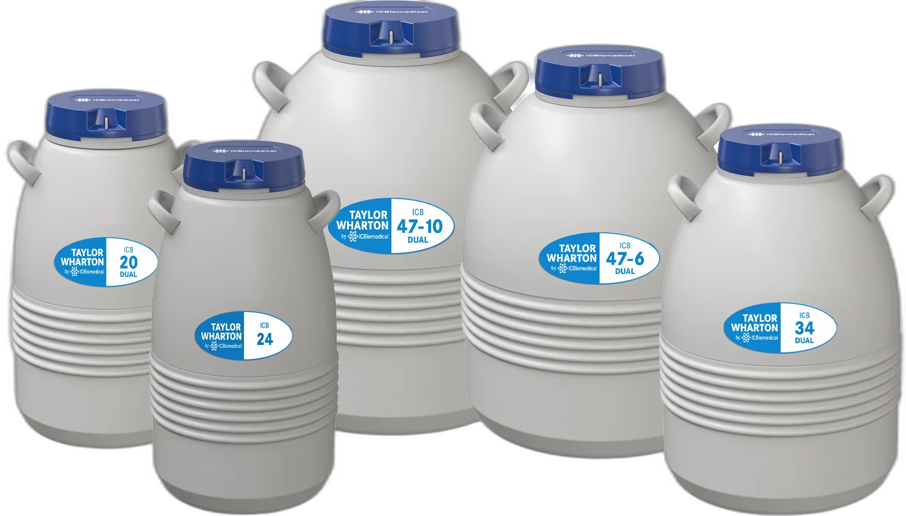
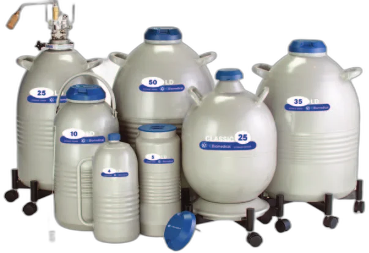
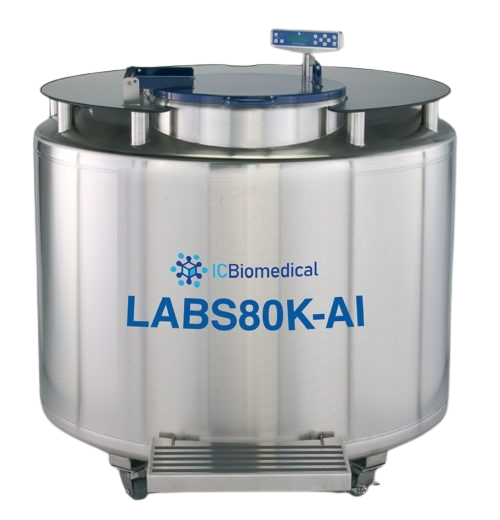
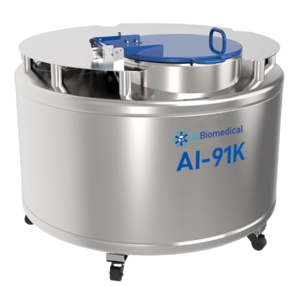
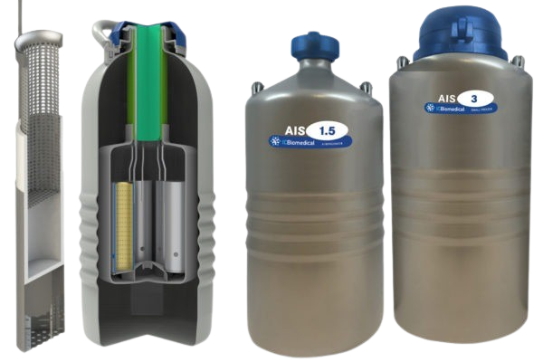

5
제품 카테고리
-196°C
보관 온도
USA
제조
2yr
보증 기간
정액 보관용 소형 냉동고부터 대규모 번식 프로그램을 위한 벌크 저장 탱크까지, IC Biomedical의 AI/축산 전용 극저온 장비 라인업을 소개합니다.
ICB, XT, HC 시리즈 및 AI Shield. 범용 캐니스터 호환, 견고한 알루미늄 바디, 잠금형 리드. 목장과 클리닉에서의 일상 운용에 최적화.
자세히 보기 →
정밀한 극저온 조건을 유지하며 스트로를 안전하게 수송합니다. Store-Ship-Store 개념으로 보관과 수송을 하나의 용기에서 해결.
자세히 보기 →
목장과 클리닉을 위한 LN₂ 보관 듀어. 장기 보유 시간과 견고한 구조로 현장에서 안정적인 극저온 환경을 유지합니다.
자세히 보기 →

대규모 정액 보관 운용을 위한 스테인리스 벌크 냉동고. 수만 개의 스트로를 체계적으로 보관하며 장기적으로 안정적인 LN₂ 환경을 제공합니다.
자세히 보기 →온도 변동으로부터 정액 시료를 보호하여 인공수정 실패율을 줄입니다.
AIS 1.5 및 AIS 3 모델은 혁신적인 AI Shield™ 캐니스터로 극저온 장기 보관 시 더 긴 보유 시간을 제공합니다. 가장 혹독한 환경에서도 시료를 안전하게 보호하도록 설계되었습니다.
Made in USA

보관 탱크부터 해동 장비, 안전 용품까지 — 번식 프로그램에 필요한 모든 것
장기 보유 시간과 견고한 구조를 갖춘 LN₂ 보관 듀어. 목장 환경에서도 안정적인 극저온 환경을 유지하며 다양한 용량 옵션을 제공합니다.
수송 중에도 극저온 조건을 정밀하게 유지합니다. 흡착 매체 기반 드라이 쉬퍼로 누출 없이 안전하게 정액 스트로를 이동합니다.
캐니스터, 케인, 랙, 고블릿 등 체계적인 정액 재고 관리를 위한 호환 부품. 표준 및 대형 규격으로 다양한 탱크에 호환됩니다.
해동 수조(Thaw Bath), 타이머, 포셉 등 정밀한 온도 관리를 위한 장비. 정액 해동 시 정확한 온도와 시간을 제어하여 생존율을 극대화합니다.
극저온 장갑, 앞치마, 안전 장비 등. LN₂를 취급하는 현장에서 작업자의 안전을 보장하는 필수 보호 장비를 제공합니다.
LN₂ 수위가 낮아지면 시각 및 청각 경보를 발생시키는 Cryo-Sentry 알람 시스템. 귀중한 유전 자원이 온도 이탈로 손상되는 것을 방지합니다.
다음 항목을 기준으로 최적의 탱크를 선택하십시오.
현재 보관 중인 스트로 수량과 향후 확장 계획을 기준으로 필요 용량을 산정합니다. 여유 공간을 확보하여 운용 유연성을 높이십시오.
LN₂ 공급이 원활한 지역이라면 보유 시간이 짧은 대용량 모델도 적합합니다. 원격지라면 장기 보유 모델을 우선 고려하십시오.
현장 이동이 잦다면 경량·컴팩트 모델을, 고정 보관이 주 목적이라면 대용량 벌크 모델을 선택하십시오.
넓은 넥 직경은 빠른 접근이 가능하지만 증발률이 높습니다. 좁은 넥 직경은 LN₂를 절약하지만 접근 시간이 길어집니다. 운용 패턴에 맞게 선택하십시오.
기존에 사용 중인 캐니스터, 케인, 고블릿과의 호환성을 확인하십시오. IC Biomedical 제품은 업계 표준 규격과 호환됩니다.
LN₂ 수위가 적절하게 유지되는 한, 정액은 사실상 무기한으로 생존력을 유지합니다. -196°C에서는 모든 생물학적 활동이 정지되므로, 20년 이상 보관된 정액에서도 정상적인 수태율이 보고되고 있습니다. 핵심은 탱크의 LN₂ 수위를 정기적으로 점검하고 보충하는 것입니다.
현재 보관 중인 스트로 수량의 1.5~2배 용량을 권장합니다. 소규모 목장(50두 미만)은 ICB 20~24 시리즈, 중규모(50~200두)는 ICB 34~35 시리즈, 대규모 번식 센터는 LABS 벌크 냉동고가 적합합니다. 향후 확장 계획도 반드시 고려하십시오.
장거리 운송이나 항공 수송 시에는 전용 베이퍼 쉬퍼(드라이 쉬퍼)를 사용하는 것이 안전합니다. ICB Dual 시리즈는 보관과 수송을 하나의 용기에서 해결하는 Store-Ship-Store 개념으로, 별도의 수송 용기 없이도 안전한 이동이 가능합니다. 단거리 이동이라면 일반 소형 냉동고로도 충분합니다.
최소 2주에 1회, 여름철에는 주 1회 점검을 권장합니다. 측정 스틱을 10초간 탱크에 담근 후 꺼내어 결빙 높이로 수위를 확인합니다. 스트로가 항상 LN₂에 완전히 잠겨 있어야 합니다. Cryo-Sentry 알람을 설치하면 수위 저하 시 자동 경보를 받을 수 있습니다.
기본 필수 장비: (1) 해동 수조 — 37°C 정밀 온도 유지, (2) 해동 타이머, (3) 스트로 집게(포셉), (4) 극저온 장갑, (5) LN₂ 수위 측정 스틱, (6) Cryo-Sentry 알람. 추가로 스트로 커터, 시스(Sheath), AI 건(Gun)이 현장 작업에 필요합니다.
필요 제품, 수량, 납기 일정을 알려주시면 빠르게 견적을 드립니다.
주소
경기도 성남시 중원구
둔촌대로 560 벽산테크노피아 201호
영업시간 월~금 09:00 – 18:00